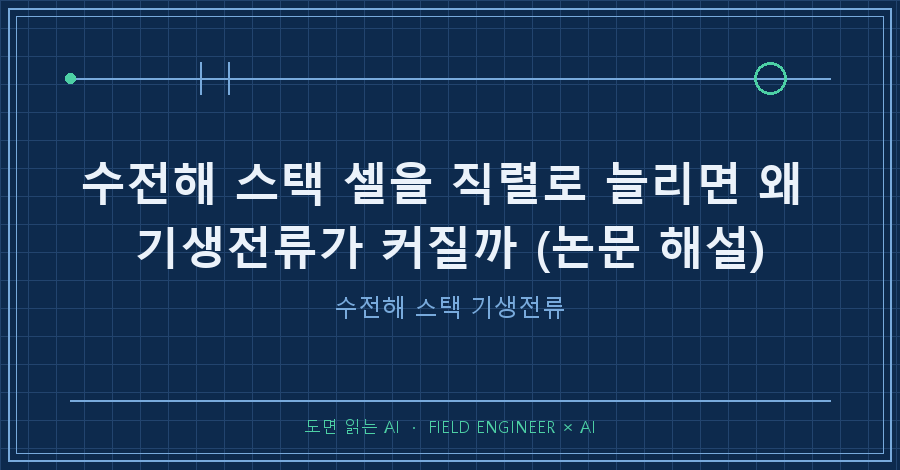

수전해 스택 기생전류는 셀을 직렬로 많이 쌓을수록 커집니다. 한 시뮬레이션에서 공급 전류 중 새는 비율이 50셀 3.9%, 500셀 59.4%였어요 [Hysa et al. 2025, Fig.6]. 500셀이면 넣은 전류의 절반 넘게 수소를 못 만든다는 뜻입니다.
AI로 논문을 읽는 연재 7편, 지난 편이 '출력을 낮추면'이었다면 이번엔 몸집을 키우면 왜 아픈가입니다. 핀란드 LUT대 연구팀의 오픈액세스 논문 두 편, 문제를 다룬 2025년 IET Renewable Power Generation 논문과 해법을 다룬 2026년 Journal of Power Sources 논문을 붙여 읽었어요.
1. 두 논문은 무엇을, 어떻게 풀었나요
셀을 직렬로 더 붙여 전압을 올리면 이득인데, 기생전류가 발목을 잡는다는 게 출발점이에요. 직렬 셀을 늘려 운전 전압을 1000~1500 V로 올리면 설비비가 줄고 전력변환기 효율도 좋아진다고 논문은 씁니다 [Hysa et al. 2025, 1장]. 기생전류(shunt current)란 셀 안에서 반응하지 않고 공통 전해액 배관(포트·매니폴드)으로 빠져나가는 전류입니다. 이 전기는 수소 대신 열이 돼요 [Hysa et al. 2025, 1장].
2025년 논문은 "셀 수를 늘리면 얼마나 새나", 2026년 논문은 "그럼 스택을 여러 개로 쪼개 직렬로 이으면 나아지나"를 물었습니다. 방법은 둘 다 전기 회로 모델 시뮬레이션이에요. 셀마다 막 저항, 전극 저항, 입·출구 포트 저항 4개를 넣고, 셀 사이 매니폴드 저항까지 그물처럼 엮었어요 [Hysa et al. 2025, 2.1절].
| 항목 | 설정 |
|---|---|
| 기준 스택 | 실제 산업용 알칼라인 수전해, 163셀 직렬 |
| 공급 전류 | 4567 A |
| 온도·압력 | 입구 70 ℃ / 출구 80 ℃, 16 bar |
| 전해액 | 수산화칼륨(KOH) 25 wt% |
| 셀 특성 | 개방전압 1.7 V, 셀 저항 55 μΩ (직선 근사) |
(출처: [Hysa et al. 2025, Table 1·2])
출구 쪽 기포로 전기가 덜 통하는 효과도 넣었어요. 빼고 계산하면 기생전류가 과대평가됩니다 [Hysa et al. 2025, 3.1절].
2. 셀 수와 수전해 스택 기생전류는 어떤 관계인가요
셀이 늘수록 새는 비율이 가파르게 오릅니다. 163셀 실제 스택은 측정 기반 약 16%에 맞춰 둔 기준점이고(2026년 논문 표기 15.8%), 500셀은 59.4%까지 오릅니다 [Hysa et al. 2025, 3.1절; Hysa et al. 2026, 2.3절].
수소 1 kg당 전력(SEC)도 50셀 54.2 kWh에서 500셀 118.8 kWh로 두 배가 넘어요 [Hysa et al. 2025, Fig.6(c)]. 출력을 낮추면 더 나빠져, 그래프로 읽으면 163셀은 정격에서 약 16%, 50% 부하에서 약 38%까지 오릅니다 [Hysa et al. 2025, Fig.7, 그래프 판독].
왜 그럴까요. 직렬 셀이 늘면 전류가 샐 병렬 샛길이 그만큼 늘고 [Hysa et al. 2025, 3.1절], 첫 셀과 끝 셀 사이 전위차가 커집니다 [Hysa et al. 2026, 3.3절]. 샛길 전류는 스택 양 끝 셀에서 가장 크고 가운데에서 방향이 바뀌어요 [Hysa et al. 2025, Fig.5].
3. 쪼개서 직렬로 이으면 얼마나 줄어드나요
같은 500셀을 50셀짜리 10개로 나누면 59.4%가 3.9%로 떨어집니다 [Hysa et al. 2026, Fig.3]. 단, 전해액 순환을 서브스택마다 따로 둘 때의 값이에요.
| 500셀 구성 | 기생전류 비율 | 출처 |
|---|---|---|
| 1개 × 500셀 | 59.4% | [Hysa et al. 2026, 3.1절] |
| 10개 × 50셀, 전해액 분리 | 3.9% | [Hysa et al. 2026, 3.1절] |
| 2개 × 250셀, 전해액 공유 | 36.5 → 26.9% | [Hysa et al. 2026, Fig.7] |
| 10개 × 50셀, 전해액 공유 | 12.5 → 5.6% | [Hysa et al. 2026, Fig.7] |
전해액을 공유하면 서브스택 사이 외부 배관으로 또 샙니다. 화살표는 외부 포트를 1 m에서 10 m로 늘린 결과로, 길수록 덜 새지만 줄어드는 폭은 점점 둔해져요 [Hysa et al. 2026, 3.2절].
논문 비교표는 전류효율·신뢰성은 분리형, 비용·단순함은 공유형에 표시합니다 [Hysa et al. 2026, Table 2]. 분리형은 서브스택마다 펌프·유량 제어기가 따로 필요해서예요 [Hysa et al. 2026, 3.3절].
4. 이 논문들의 한계는 무엇인가요
- 전부 시뮬레이션입니다. 여러 서브스택 직렬 실험 검증은 저자들도 향후 과제로 남겼어요 [Hysa et al. 2026, 3.3절].
- 전해액 펌프 전력은 계산에서 뺐습니다. 포트를 길게 하면 압력손실이 커져 펌프 전력이 늘어요 [Hysa et al. 2025, 3.2절].
- 저자들은 이 형상을 "비효율적 설계"라 부르고, 셀이 아주 많을 때의 값은 정상 운전에 맞지 않는다고 적었어요 [Hysa et al. 2026, 2.3절]. 59.4%는 업계 평균이 아닙니다.
5. AI에게 이 두 논문을 어떻게 읽혔나요
여기부터는 읽는 방법이에요. 두 PDF를 텍스트로 뽑아 AI에게 읽히고, 그림·표가 있는 쪽은 이미지로 따로 띄워 대조했습니다. 함정이 네 개 나왔어요.
맞춘 값과 예측한 값. 초록은 "측정 데이터로 검증했다"고만 써서, 요약하면 '모델이 16%를 맞혔다'로 읽히기 쉬워요. 본문은 다릅니다. 포트·매니폴드 길이 0.8 cm를 16%에 맞추도록 조정했다고 적혀 있어요 [Hysa et al. 2025, 2.3절]. 16%는 결과가 아니라 입력입니다.
함께 바뀐 조건. 셀을 늘릴 때 유속을 일정하게 두려고 매니폴드 저항을 셀 수에 반비례하게 바꿨어요 [Hysa et al. 2025, 식(8)]. "셀만 늘렸다"는 요약은 틀립니다.
사라진 칸 위치. 텍스트로 뽑으면 비교표의 체크표시가 줄줄이 나오기만 하고, 어느 칸인지가 사라져요. 표 쪽을 이미지로 띄워 다시 읽혔습니다.
두 논문의 같은 숫자. 3.9%가 두 논문에 다 나와요. 2025년 논문의 50셀 단일 스택 값과, 2026년 논문의 분리형 10개 × 50셀 값입니다. 2026년 논문은 분리형이 서브스택 사이로 기생전류가 흐르지 않는 구성이라고 밝혀요 [Hysa et al. 2026, 3.1절]. 조건을 확인한 뒤에야 두 숫자를 이어 읽을 수 있어요.
네 개를 잡은 질문입니다.
1) 모든 수치를 '입력으로 맞춘 값'과 '모델이 계산한 값'으로 나눠 적어.
2) 비교 케이스마다 함께 바뀐 변수를 전부 나열해.
3) 표는 이미지로 보고 칸별로 다시 읽어. 텍스트 추출본과 다르면 표시.
4) 두 논문에 같은 숫자가 나오면 조건이 같은지 확인해.요약은 "무엇이 나왔나"만 옮기고 "무엇을 맞췄나"는 흘립니다. 파라미터 절을 따로 묻는 한 단계가 핵심이에요.
6. 자주 나올 질문 세 가지
Q. 셀을 적게 쌓으면 무조건 좋은가요?
기생전류만 보면 그렇지만 전압 이점이 줄어요. 그래서 논문은 짧은 스택을 직렬로 잇자고 합니다 [Hysa et al. 2026, 3.3절].
Q. 수전해 스택 기생전류는 포트를 길게 하면 해결되나요?
500셀·400셀에서 5% 아래로 내리려면 포트 저항을 약 1000배 키워야 했어요. 그만큼 압력손실과 설비비가 늘어납니다 [Hysa et al. 2025, 3.2절].
Q. 운전 압력·온도도 영향이 있나요?
높은 압력은 기포를 줄이고, 높은 온도는 전해액 전도도를 올려 둘 다 기생전류를 키운다고 해요 [Hysa et al. 2026, 3.2절]. 다음 편 주제입니다.
---
정리하면 직렬 셀 수는 전압 이득과 누설 손해를 맞바꾸는 손잡이예요. 두 논문의 답은 "통째로 길게"가 아니라 "짧게 여러 개, 사이를 잘 끊어서"입니다.
다음 편은 압력과 온도를 올릴 때 누수가 왜 같이 오르는지 봅니다. 여러분이 읽는 논문에서 '맞춘 값'이 결과처럼 요약된 적은 없었나요?
AI로 논문 읽는 방법은 makefield.ai에 계속 쌓아두고 있습니다.